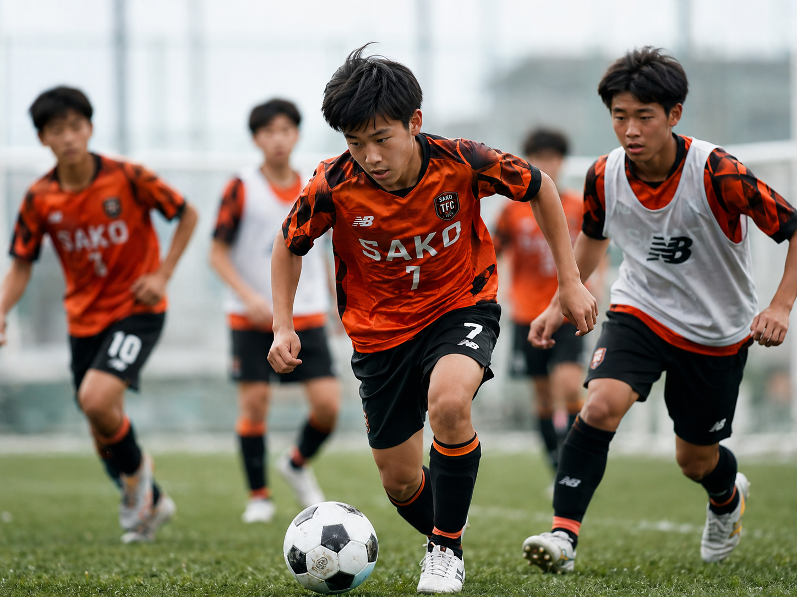

一人ひとりが目標を設定し、振り返りながら成長を積み重ねます。
02 / JUNIOR YOUTH
JUNIOR
YOUTH
小学6年生〜中学3年生小学生年代から中学生年代へ。長くクラブチームで活動したい選手が、次のステージへつながるためのカテゴリーです。

ABOUT JUNIOR YOUTH
個の力を伸ばし、
戦える基礎を築く。
TARGET小学6年生〜中学3年生
小学6年生はJUNIOR YOUTHの活動へ参加できる運用を予定しています。
BACKGROUND育成年代を2カテゴリーへ
仲間が増えたことを受け、JUNIOR YOUTHとJUNIORに分けて活動します。
STYLE成長に向き合う
技術だけでなく、自分の目標と向き合い続ける姿勢を育てます。
DEVELOPMENT
小中学校を通して、
クラブで成長できる環境へ。
スタッフが全体をオーガナイズし、日々のトレーニングを通じて技術と判断力を高めます。
学ぶ・知る・成功する経験を重ね、サッカーそのものへの興味と自信を育てます。
※活動日・会費などの詳細は、決定内容に合わせてご案内します。
体験・入団について、
まずはお気軽にご相談ください。
体験練習・入団・その他のお問い合わせを、ひとつのフォームから受け付けています。